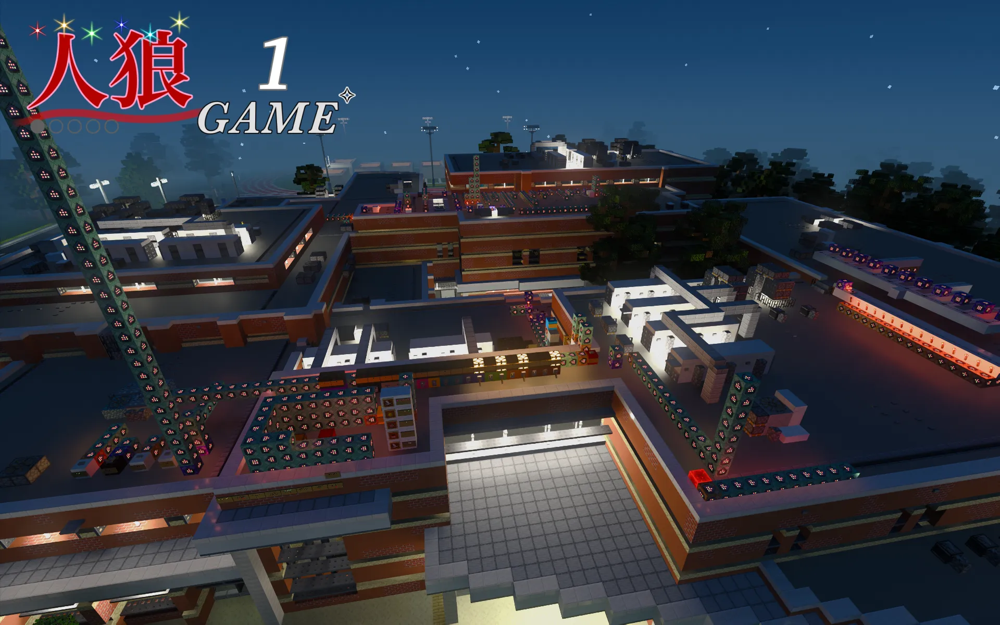
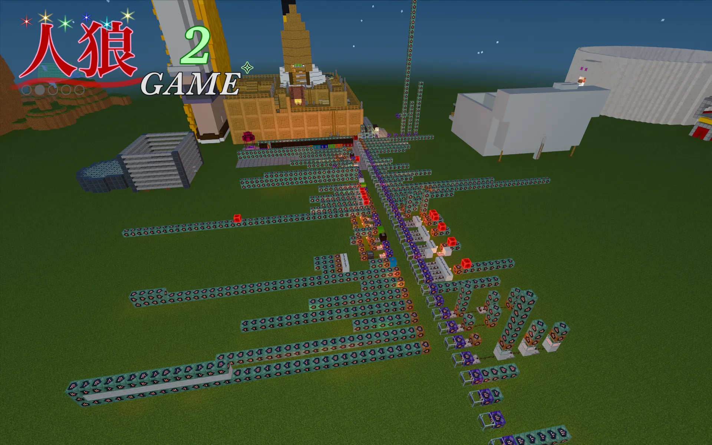
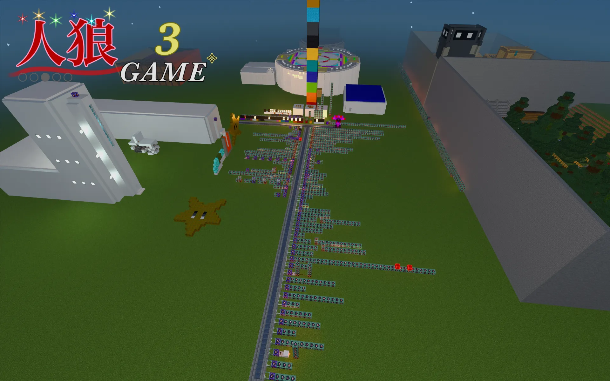
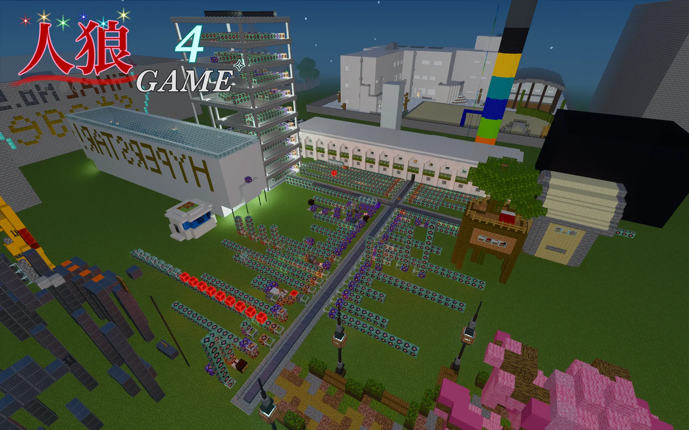
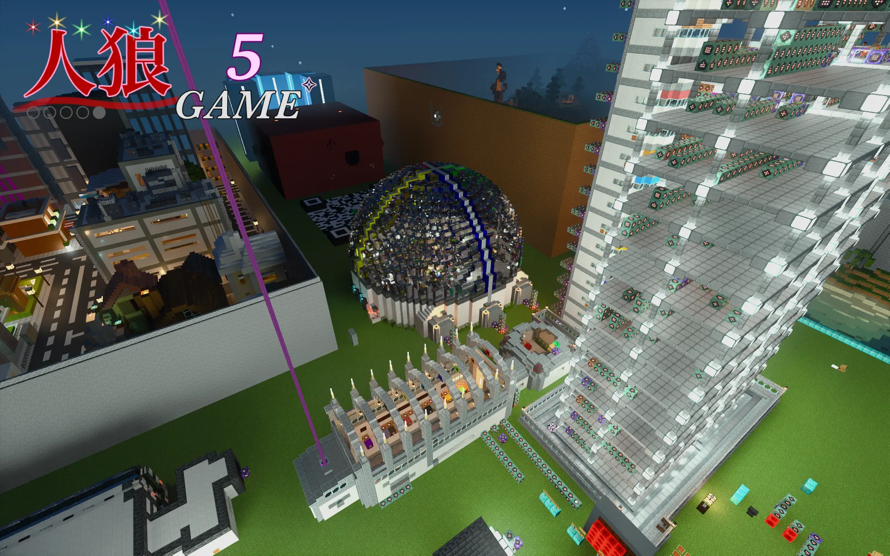

概要






| ニックネーム | hyper star |
| 好きなゲーム | Minecraft |
| 活動時期 | 2019年9月～ |
| 主な活動内容 | ワールド運営、動画制作 |
Minecraftの記録
| プレイ時間 | 9000時間以上 |
| 歴代プレイ端末 |
活動内容
初めに
こちらでは、プライベートで行っている活動の一部をご紹介しています。
活動内容は文章で説明するよりも動画で見ていただく方が分かりやすいと思うので、過去に作った動画を掲載しています。
気軽におまけ程度としてご覧ください。
権利などの都合により一般公開はしておりません。
動画ごとに制作規模や完成度は異なりますが、「人狼の歴史」や「誕生日記念動画」は、特に力を入れて制作しています。
プライベートで制作した動画のため、一部にラフな表現や内輪的な要素が含まれておりますこと、あらかじめご了承ください。
人狼の歴史
2021年から2022年にかけて制作した動画です。数年間の活動の流れや経緯を紹介しています。
初めて本格的に制作した動画なので、画質や演出など至らない点もありますが、あらかじめご了承ください。
リンク
その他の動画はこちらからご覧いただけます。